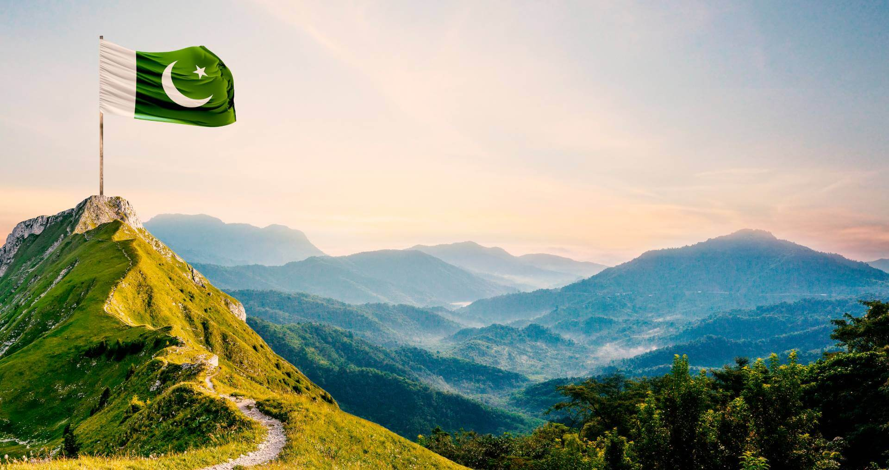
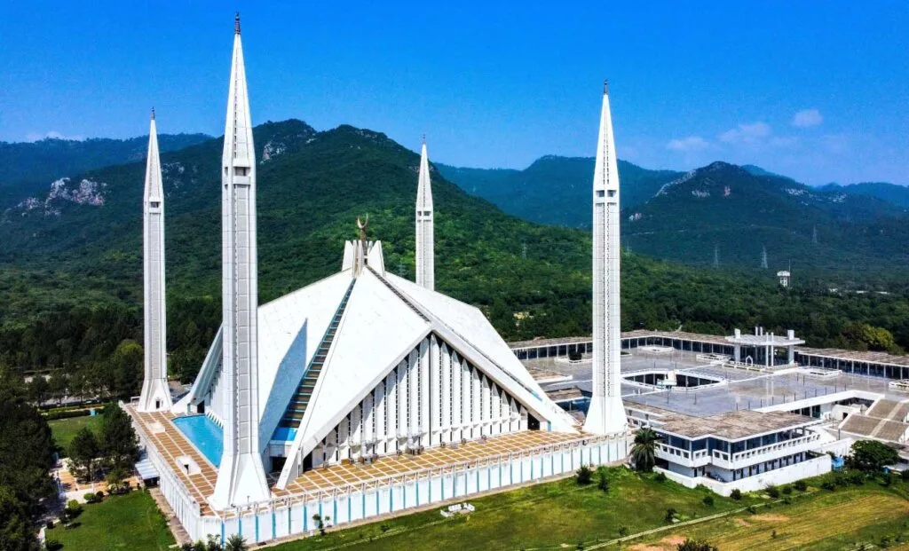

Pakistan
Introduction to Pakistan

Pakistan, officially known as the Islamic Republic of Pakistan, is a South Asian country located at the
crossroads of Central and Western Asia. It shares borders with India to the east, Afghanistan and Iran to the
west, and China to the north. To its south lies the Arabian Sea.
Pakistan was established on August 14, 1947, following the partition of British India. It was created as a
separate homeland for Muslims under the leadership of Muhammad Ali Jinnah, who is also known as the "Father of
the Nation."
The country has a rich cultural and historical heritage, with landmarks such as Mohenjo-Daro and Taxila, which
date back to ancient civilizations. Pakistan is also known for its diverse landscapes, ranging from the towering
peaks of the Karakoram Range (including K2, the second-highest mountain in the world) to the lush green plains
of Punjab and the deserts of Sindh.
Islamabad is the capital city, while Karachi, Lahore, and Faisalabad are among its largest cities. Pakistan has
a population of over 240 million people, making it the fifth most populous country in the world. Urdu is the
national language, and English is widely used for official purposes.
The economy of Pakistan is diverse, encompassing agriculture, manufacturing, and services. It is known for
producing textiles, rice, and sports goods, among other products. Despite challenges, Pakistan remains a
resilient nation with a vibrant culture, including traditional music, art, and cuisine.
Faisal Masque

The Faisal Mosque, located in Islamabad, is Pakistan's largest mosque and an iconic landmark. Funded by King
Faisal of Saudi Arabia, it was designed by Turkish architect Vedat Dalokay and completed in 1986.
The mosque's unique design resembles a Bedouin tent, with a large triangular prayer hall and four tall minarets.
It can hold over 100,000 worshippers, making it one of the largest mosques in the world.
Set against the Margalla Hills, the Faisal Mosque is a symbol of Pakistan's Islamic heritage and a popular
tourist attraction.
Minar E Pakistan
Minar-e-Pakistan is a national monument located in Lahore, Pakistan. It was built to commemorate the Lahore
Resolution of 1940, where the All-India Muslim League demanded a separate homeland for Muslims, which later
became Pakistan.
The tower stands in the heart of Iqbal Park and was designed by architect Nasreddin Murat-Khan. Its construction
began in 1960 and was completed in 1968. The monument is 70 meters (230 feet) tall, symbolizing the struggle for
Pakistan's independence.
The monument is 70 meters (230 feet) tall, symbolizing the struggle for
Pakistan's independence.
Minar-e-Pakistan is a blend of Mughal, Islamic, and modern architecture. It is a significant historical and
tourist site, representing the ideals of freedom and unity.
Minar-e-Pakistan is not just a historical structure but also a place of inspiration and pride for Pakistanis.
Its base features beautifully inscribed stone tablets that include the text of the Lahore Resolution in Urdu,
Bengali, and English, along with Quranic verses and sayings of Muhammad Ali Jinnah and Allama Iqbal.
The structure reflects the journey of independence, symbolized through its gradual elevation from a wider base
to a narrower top, representing the rise of a united nation. Surrounding the monument is a vast park with
fountains and gardens, offering a serene environment for visitors.
Today, Minar-e-Pakistan serves as a focal point for national celebrations, political gatherings, and cultural
events, making it a living symbol of Pakistan’s heritage and aspirations.